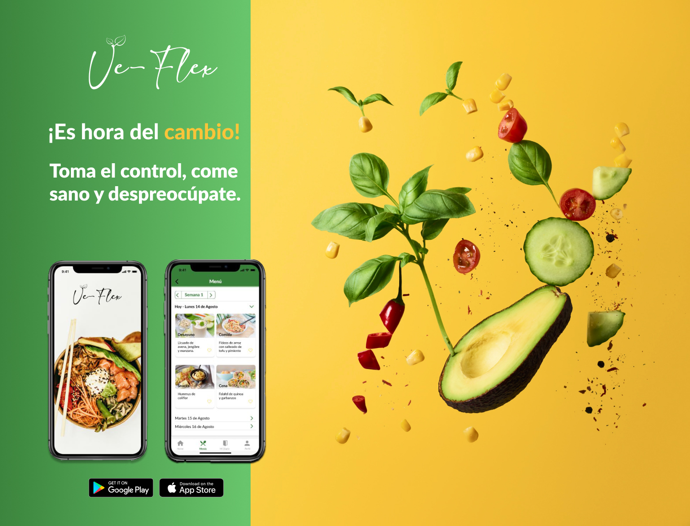

Proyecto para diseñar una aplicación desde cero. Landinpage, research, arquitectura de la información, UI... Ve-flex es un proyecto que te ayuda en tu reduccion de consumo de carne o en tu transición para ello.
Ver proyectoProyecto para diseñar una aplicación desde cero. Landinpage, research, arquitectura de la información, UI... Ve-flex es un proyecto que te ayuda en tu reduccion de consumo de carne o en tu transición para ello.
Ver proyectoProyecto para mejorar la arquitectura de la información de una página web real. En este caso, es una librería, cuya imagen corporativa y arquitectura de la información eran bastantes confusas y poco intuitivas.
Ver proyectoProyecto para añadir una nueva funcionalidad. En este caso usamos To Good To Go para añadir alguna nueva funcionalidad que mejorara la experiencia de nuestros usuarios.
Ver proyecto